1. 手機直立首屏 before / after（390×844）
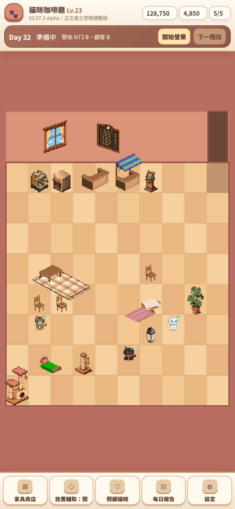

| 視窗 | 首屏 zoom | minZoom（整房） | 核心縱向占 safe | 左右每側裁切 |
|---|---|---|---|---|
| 390×844 | 0.526 | 0.420 | 96% | ~8% |
| 393×852 | 0.530 | 0.424 | 95% | ~8% |
| 430×932 | 0.582 | 0.466 | 93% | ~8% |
| 1440×812（桌面） | 0.491 | 0.466 | 97% | 0% |
safe gameplay viewport＝canvas 高度 − 78px 情境列保留。皆達 ≥ 90% 目標；裁切每側 ≤ 10%（皆外圈欄，關鍵分區 0 裁切）。
2. 三種手機寬度首屏滿版

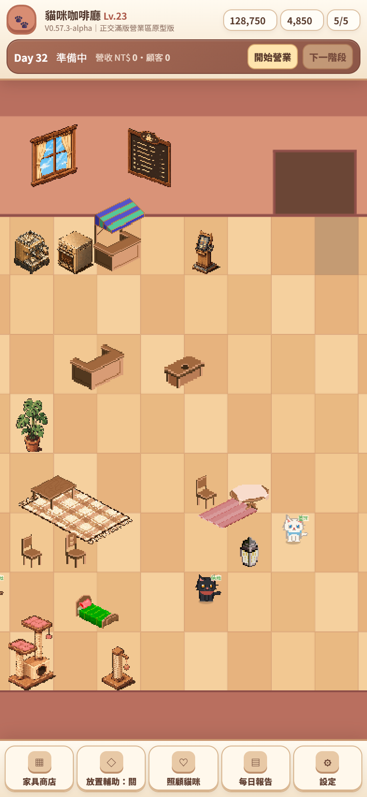
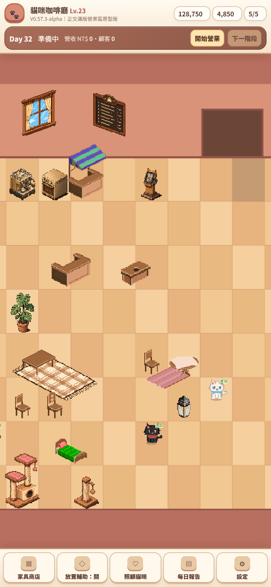
3. Camera 範圍：整房 zoom-out 與放大
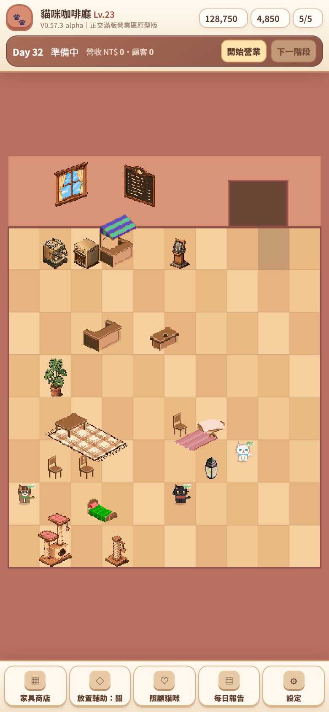
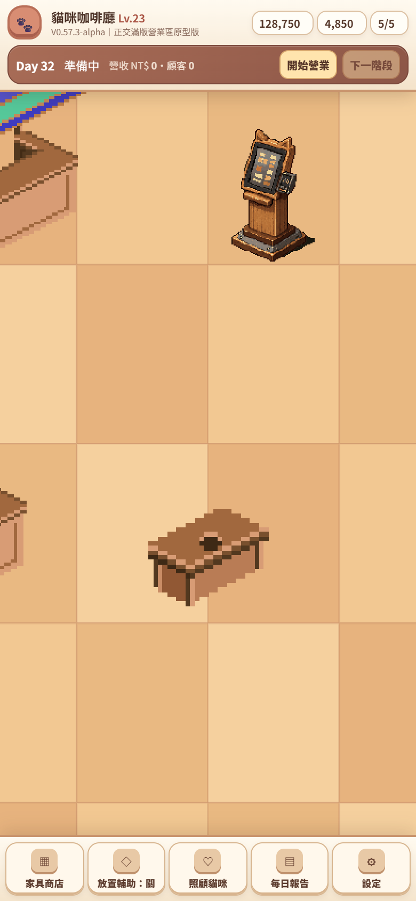
4. Pan 四邊界（貼齊房間、無空白）
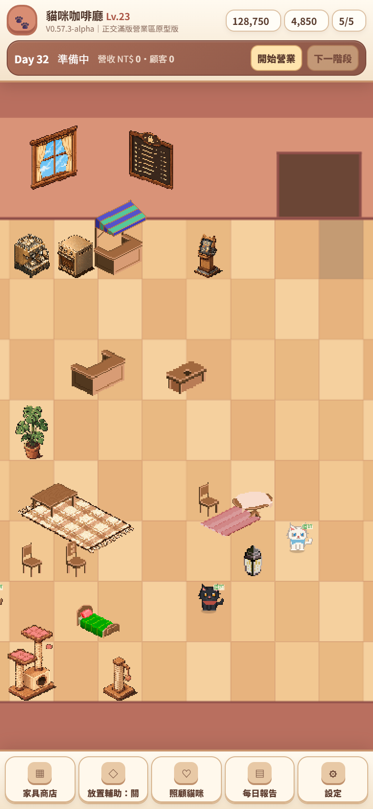
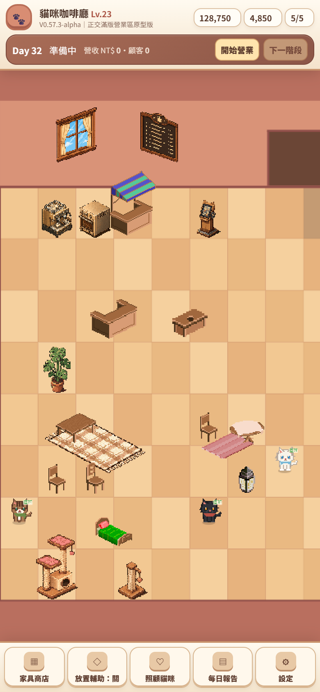
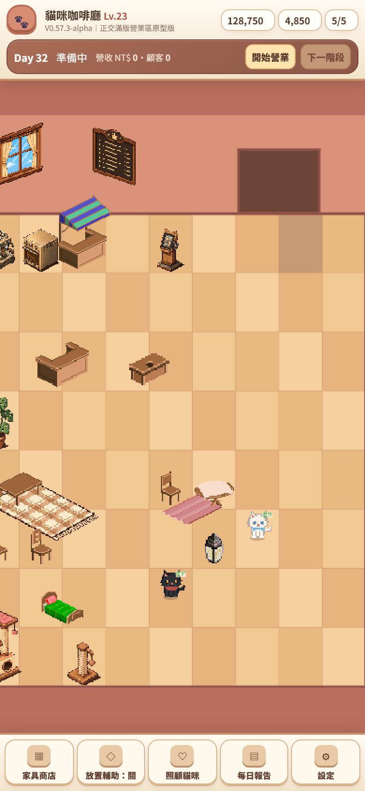
5. 真實存檔 / Art Debug / 桌面
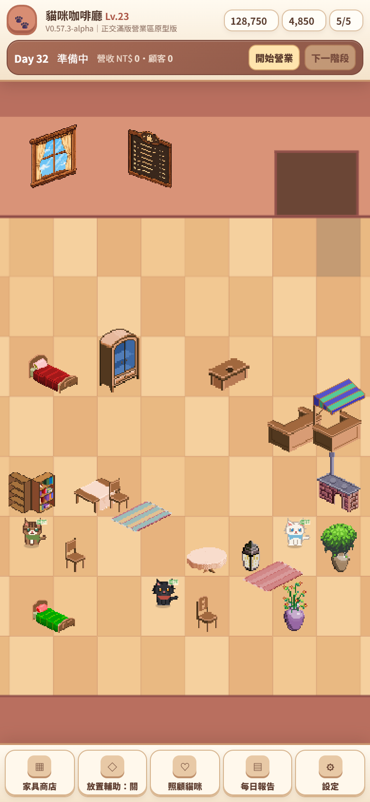
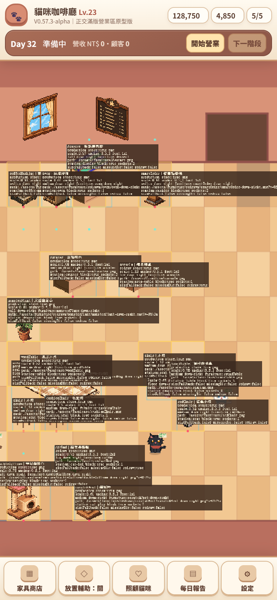
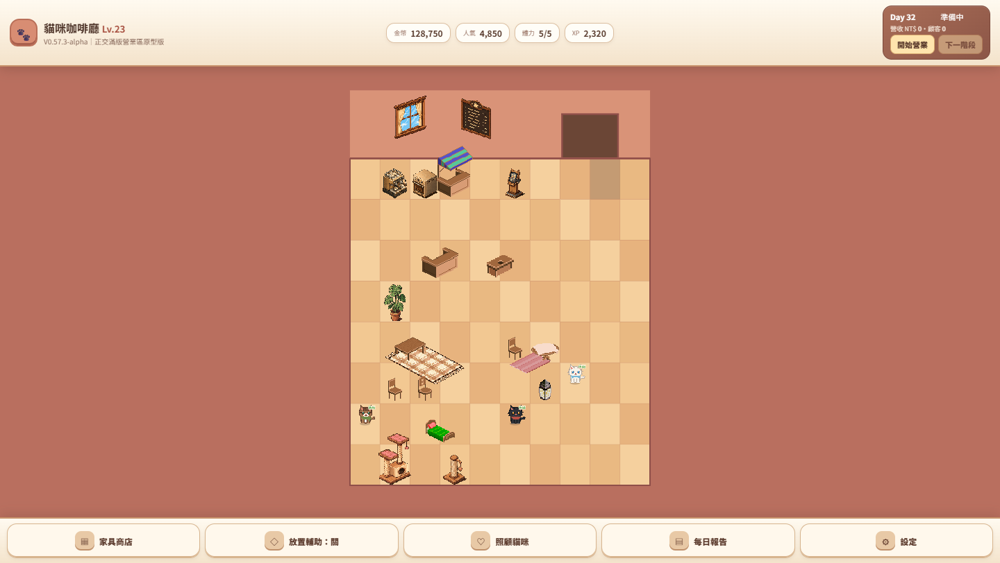
6. 空間分區（ortho-room-zones，純格資料）
兩格門 x7–8（x9 留牆）｜三層服務：背牆設備帶 + 員工工作區(後) / 顧客服務區(前)｜主走道 x7–8 兩格全通｜coreGameplayBounds x1–8 為首屏取景。18 件 Demo 全部合法、入口→服務/座位/貓咪可達、顧客動線不穿員工工作區、員工工作區內部連續。詳見 V0573 結果。